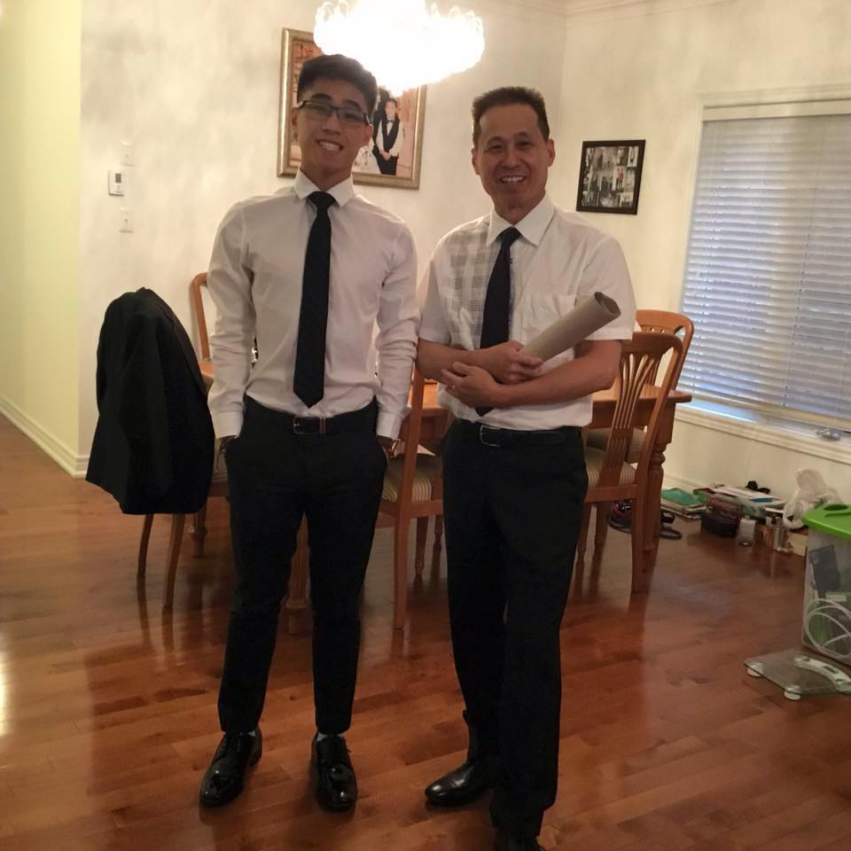

About Me
Hi my name is Kevin Doan. I am from Brampton, Ontario. I am currently studying at Brock University for Business Economics.
I am a first year student and enjoy hanging out with my friends and family. I have four older brothers which are Ryan, Henry, and Quyet (youngest to oldest). I took this course because I enjoy using technology. Today's time almost everything involves computers. I am also very interested in cryptocurrency, which is why I want to learn more about technology.


View my University
Click here to open up this page again
What I Did In My Summer
Toronto
During my summer I spent most of my time staying over Toronto. There are always events happening and an endless variety of food to eat. I also hanged out with a lot of friends from high school since we were all going to different universities. I also learnt a lot this summer about crypto-currency which changed my interest in school.
- Hanging out with my friends
- Eat food
- Go swimming or exercise
- Korean food
- Indian food
- Mexican food